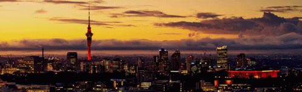

Auckland, New Zealand

Geographical Location: Australia
Auckland is the largest city in New Zealand located on the Northern Island of the country. The city's population is just below 1.7 million people. Auckland is known as the “City of Sails” for its plethora of sailboats and yachts. The vast amount of waterfronts and harbors are conveniently located for sailors to embark on their hobbies.
Aside from sailing and waterfronts, Auckland is also surrounded by 48 volcanoes and a few rainforests. The climate of Auckland is mild-temperate. The winters are not too cold (averaging 64 degrees Fahrenheit) and summers mildly harsh (around 80 degrees Fahrenheit).
Photo Gallery


Dublin, Ireland


Geographical Location: Western Europe
Dublin City is the capital city of the Republic of Ireland and is located in the east of Ireland. Dublin was originally a Viking settlement called Dubh Linn which translates to black pool. Dublin has always been a historically significant city in Irish history, from being the main city from which the British ruled over Ireland for 800 years to then being the setting of the 1916 Easter Rising and Irish War of Independence.
Today Dublin is a developed city boasting one of the strongest tech sectors in Europe and a booming tourism industry. Dublin is renowned for its sites such as the GPO, Croke Park, O'Connell Street, Temple Bar and Saint James Gate, which is where Guinness is brewed. Dublin is also surrounded by great coastal towns such as Dun Laoghaire, Howth and Skerries.
Photo Gallery


Apostle Islands, WI


Geographical Location: North America
The Apostle Islands are a collection of 22 islands in Lake Superior located in the northern region of Wisconsin, USA. Originally inhabited by the Ojibwe (Chippewa) people, the islands contain over hundreds of years worth of rich Native American history. In 1970, 21 of the islands and the surrounding waters were designated as the Apostle Islands National Lakeshore, a protected area managed by the National Park Service. Lastly, the islands are home to a diverse range of wildlife, including, white-tailed deer, black bears and various bird species.
There are six lighthouses spread across the islands, making it one of the largest collections of lighthouses in the United States. When the island receives visitors it is viewed as a popular destination for outdoor activities such as kayaking, sailing, hiking and camping. In addition, many people enjoy other activities such as berry picking. Camping is also allowed in 19 of the 21 islands to date.
Photo Gallery


Rajasthan, India


Geographical Location: Asia
Rajasthan, located in northwestern India, is a captivating state renowned for its opulent palaces, ancient forts, and vibrant culture. The "Land of Kings" boasts cities like Jaipur with its bustling markets, Udaipur with its serene lakes, and Jaisalmer with its golden desert dunes. This region's warm hospitality and desert charm make it a cultural treasure.
Beyond its architectural marvels, Rajasthan's natural beauty shines through its national parks and wildlife sanctuaries, offering glimpses of majestic tigers and diverse bird species. The state's cuisine, known for its aromatic spices, presents dishes like Dal Baati Churma that showcase its rich flavors. From historical heritage to natural wonders, Rajasthan presents a kaleidoscope of India's vibrant identity.
Photo Gallery